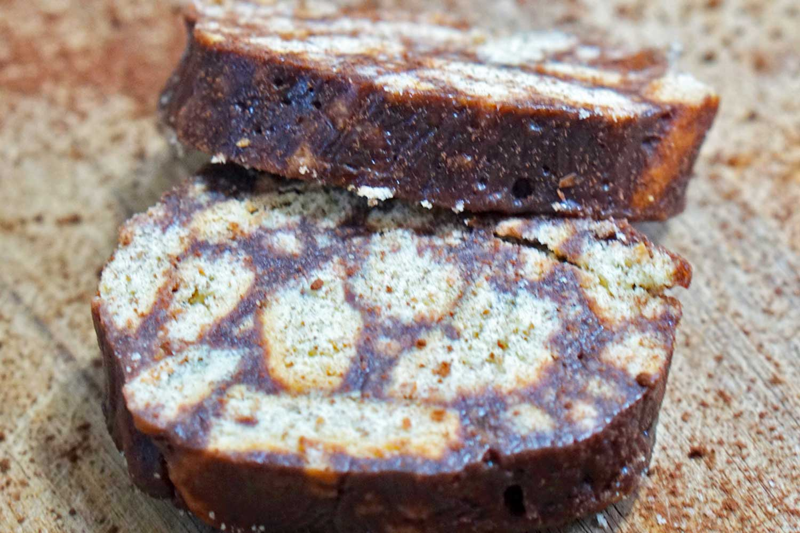

Back
Tinginys

Description
This easy to make and laziest dessert ever is liked by everyone. In Lithuania it's called "tinginys", which
means "sloth". The recipe was passed down to me from my mom who doesn't like working in the kitchen. This recipe
also has a lot of variations but this is the most common, traditional version.
Ingredients
- 3/4 cup unsalted butter
- 1 (14 ounce) can sweetened condensed milk
- 2 tablespoons unsweetened cocoa powder
- 8 cups tea cookies, coarsely crushed
Steps
- Melt butter in a saucepan over low heat. Stir in sweetened condensed milk and cocoa powder and heat until
well combined, stirring constantly, about 2 minutes.
- Pour crushed cookies into a big bowl and pour milk mixture on top. Mix well. Pour mixture into a large,
clear, plastic bag and shape into a loaf form.
- Allow to harden for a few hours and cut into slices to serve.
Top